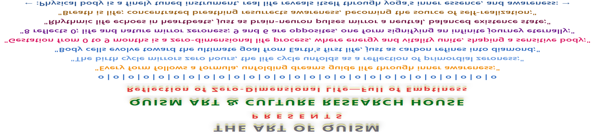

THE ART OF QUISM
P R E S E N T S
QUISM ART & CULTURE RESEARCH HOUSE
Reflection of Zero-Dimensional Life—Full of Emptiness
o | o | o | o | o | o | o | o | o | o | o | o | o | o | o | o | o | o | o | o | o | o | o | o | o | o | o
"Every form follows a formula, unfolding dreams guide life through inner awareness;"
"The birth cycle mirrors zero hours, the life cycle unfolds as a reflection of primordial zeroness;"
"Body cells evolve toward the ultimate goal from Earth's first life, just as carbon refines into diamond;"
"Gestation from 0 to 9 months is a zero-dimensional life process, where energy and vitality unite, shaping a sensitive body;"
"8 reflects 0; life and nature mirror zeroness; 9 and 6 are opposites, one form signifying an infinite journey eternally;"
"Rhythmic life echoes in heartbeats, just as brain-neuron pulses mirror a neutral, balanced existence state;"
"Breath is life; concentrated breathing resurrects awareness, becoming the source of self-realization;"
← :Physical body is a finely tuned instrument, real life reveals itself through yoga's inner essence, and awareness: →
~ ~ ~ ~ ~ ~ ~ ~ ~ ~ ~ ~ ~ ~ ~ ~ ~ ~ ~ ~ ~ ~ ~ ~ ~ ~ ~ ~ ~ ~ ~ ~ ~ ~ ~ ~ ~ ~ ~ ~

Quism, The Infinite Flow to Wholeness and Self-Realization: — Quism posits that Life is an infinite flow, subtly connected to eternal existence, steadily moving toward wholeness; this journey mirrors the refinement of diamonds, where self-realization illuminates deeper truths through the inner voyage; in this framework, consciousness and vitality complement each other, creating a rhythmic harmony—like heartbeats echoing silence. In this interplay, everything is experienced as either truth or illusion; in the philosophy of Quism, all existence becomes a reflection of inner truth, and the exploration of life unfolds through self-awareness, conscious perception, and spiritual awakening toward unity and completeness;
QUISM, Conceptual Origin and Philosophical Framework: QUISM originates from the alphabetical sequence Q–R–S–T–U, in which the movement from Q to U symbolizes a complete continuum, linking the emergence of the first life on Earth to present existence; within this structure, the symbolic contraction (QRSTU) → (QU) → (Q) represents stages of evolution—generation, parenthood, and birth; this descent illustrates the life cycle’s movement toward fulfillment, much as diamonds or emeralds attain clarity through gradual refinement;
At the core of this journey lies self-realization, unfolding through an inward voyage of perception and awareness; since the physical body arises from parental sources, understanding these origins becomes essential to achieving inner clarity and balance; in this sense, QU, as a unifying syllable, forms the foundational seed of the word QUISM;
QUISM thus emerges as a coherent philosophical doctrine—a worldview where inner perception, generational continuity, and elemental origins converge, revealing life as an interconnected process oriented toward wholeness and destined perfection;
The Alchemical Birth: From Elements to Consciousness in QUISM; The first birth on Earth continues to emerge through a flawless process, rooted in the union of elements and senses—an alchemical synthesis that merges the sources of the parents; the five elements—fire, water, air, earth, and space—transform into vital bubbles of air, signifying that life begins by breathing; in this breath, consciousness finds stability through deep inhalation and exhalation;
The five senses develop as instruments of self-realization, evolving through the digestive system, the inner alchemy of life; thus, every being is destined for an ultimate destination, guided by nature's laws, where life and nature complement each other; in this harmony, the unfolding of life is not random, but part of a greater design—a dance of matter and awareness, of source and expression—leading toward wholeness, clarity, and meaning;
Nature, Life, and the Art of QUISM—An Inner Alchemy: Nature and life, like art and the artist, exist in a continuous process of reformation between form and thought, where every act of creation carries profound inner insight; body and mind are complementary, just as the conscious and unconscious realms merge through the interaction of reality and dreams; within this dual experience, the art of QUISM emerges—not merely as an expression of form, but as a source of self-realization. This art creates an inward "laboratory of art and culture," where creative acts become reflections of a deeper philosophy; every line and color reveals layers of the soul, transforming art into a pathway of self-knowledge; in this way, Quism elevates artistic practice into a spiritual journey toward awareness, clarity, and inner truth;
Seed Principles of Quism Art Through Fictional Formulas: The foundational knowledge of Quism art is expressed through symbolic and fictional formulas; every form arises from an underlying principle, such as the coexistence of mind and consciousness within the physical body, where life and nature exchange breath and advance through a definite cycle of time; within this natural rhythm, subatomic particles mirror cosmic processes, enabling the continuous evolution of existence; all formulas and structures of thought are encoded in symbolic systems—the alphabet from A to Z and the numbers 0 to 9—both inherently rooted in emptiness, or the Zero Hour, from which form, meaning, and transformation perpetually emerge;
In Quism, these symbols function not merely as linguistic or numerical tools but as universal archetypes through which life, time, and consciousness manifest, dissolve, and renew themselves in rhythmic continuity;
G = C(Q), Gestation as a Whole-Queue Life Model: G = C(Q) defines gestation as the condensation of life and consciousness into a primordial point (Q); Gestation represents an eternal three-dimensional life cycle, encompassing creation, stability, and transformation (destruction);
The period of 0–9 months, or the "Zero Hour," signifies a phase of complete development in which C (body cells) advance through reproduction, carrying forward life from its earliest origins on Earth to the present biological form;
The sequence QRSTU functions as a symbolic Whole-Queue, where Q → U denotes a complete continuum of life—from primal existence to contemporary human birth; within this series, "QU" necessarily appears together, just as parental sources unite to generate life;
Thus, the contraction (QRSTU) → (QU) → (Q) represents generation, parenthood, and birth, respectively;
Q, as birth, marks the terminal point of manifestation and is experientially expressed through light, heat, and sound; the vowels A, E, I, O, U function as primal resonant carriers, while the alphabetical sequences QRSTU and VWXYZ symbolically articulate the emergence of light and heat as pathways toward self-realization;
Within this symbolic system, XYZ represents both biological and metaphysical convergence; X and Y chromosomes are unified through Z, denoting the Zero Hour—the gestational interval of 0–9 months; here, zero (0) functions as the generative origin, and the numerical sequence 0–9 becomes its differentiated reflection; the figure 8 embodies continuity and return, while 9 and 6 appear as complementary opposites, sustaining an eternal cyclic movement;
This structure suggests that life attains fullness through emptiness; where the birth–death cycle persists, an experiential state of death-nectar emerges through self-compromise; thus, XYZ initiates infinite life, where X reflects V, V resolves into A, and A becomes the source of consciousness; at this level, body and mind, conscious and unconscious, function as complementary fields, most vividly revealed in dreams that arise and dissolve like bubbles within the continuum of being;
Here, G (Gestation) is not merely biological time but a dynamic, harmonizing field in which life emerges through cyclic creation, stabilization, and dissolution;
X + Y = Z, A Symbolic Equation of Gestation, Origin, and Emergence: x + y = z expresses the convergence of parental sources into creative emergence at the Zero Hour; the chromosomal forms XX and XY signify a sentient body, while XYZ represents the integrative reflection of gestation—the moment when biological structure and metaphysical potential converge; X functions as the axis of introspection, reforming the life-source through developmental response to a supreme organizing principle; adolescence thus becomes a phase of reconfiguration, where body, mind, and consciousness are reshaped in the presence of life-forces, and the unconscious surfaces through dreams or experiential emptiness;
The body exists as space, while time unfolds through cyclic life processes governed by nature; in this framework, XYZ marks both the beginning and the end: life progresses through a temporal cycle initiated at birth, reflected in the 0–9 month gestational interval; this present moment—described as death-nectar—mediates continuity within impermanence;
Numerical progressions (0–9, 10–19, centuries and millennia, reflecting the zero hour) symbolize recursive temporal scaling, analogous to planetary motion within a solar system where energy remains constant; thus, the cycles of nature, life, and time mutually reinforce one another; introspection becomes universal knowledge, culturally encoded through alphabets and numbers, where human sensation reflects the underlying order of existence;
ABCD = WXYZ, The Reflective Millennium Cycle and Zero Hour: The equation ABCD = WXYZ symbolically represents a reflective millennial cycle; the alphabet divides into two equal arcs—A to M and N to Z—forming 13 + 13 = 26, which reduces to 2 + 6 = 8; the number 8 functions as the reflective form of zero: a point transformed into a circle, echoing the cyclical motion of the solar system and the life–nature continuum expressed through Zero Hour or zeroness;
{kind=link}
This cyclical logic is mirrored within the alphabet itself; ABCD and WXYZ stand as reflective poles: AD and BC correspond to temporal dualities such as Anno Domini and Before Christ, while WZ and XY signify deeper generative principles; WZ functions as the "zero-word," aligned with numbers 0–9 and the gestational Zero Hour, whereas XY represents the embryonic chromosome—the biological reflection of a millennial cycle (1000 + 1000 years);
Thus, the alphabet contains the concept of natural life and art-culture, guiding existence toward its final destination; since everyone has a unique role, everyone is special or nothing while the birth-death cycle exists; therefore, emptiness/Zero Hour is the source of introspection and self-realization, representing the end of the beginning and the beginning of the end;
QRSTU = VWXYZ, Enlightenment as the Reflection of Heat Energy: The equation QRSTU = VWXYZ symbolizes the reflective relationship between light and heat energy within the cycle of life; the appearance of a newborn represents the visible reflection of the life source, emerging through three primary expressions—light, heat, and sound; sound is articulated through the vowels A, E, I, O, U, while light and heat unfold sequentially through the alphabetic ranges QRSTU and VWXYZ; together, they form a continuous spectrum from Q to Z;
{kind=link}
Within this symbolic structure, Q represents the complete row of origin—the life source or illuminating principle—while Z signifies the Zero Hour of gestation (0–9 months), embodying heat energy and transformation; the convergence of Q and Z becomes the foundation of self-realization, or enlightenment; this is symbolically reflected in the sequence A to P, Q and Z—eighteen letters in total—corresponding to the average stages of human skeletal growth from embryo to adolescence; this progression suggests that supreme or refined energy exists inherently within every cell, guiding life toward its ultimate purpose;
Just as carbon undergoes refinement to become a diamond, life itself attains clarity through transformation; the alphabetic life circle mirrors the numerical cycle from 1 to 9, where 9 + 9 = 18, reflecting the symmetry between A–I and J–Z; enlightenment thus emerges as the reflection of the “silent word”—dreams and unconscious imagery that arise within the life cycle;
Every form exists with a formula: the physical body embodies mind and consciousness as an absolute creative act; like a seed that becomes a tree while still containing the seed within itself, life unfolds through birth, death, and the experience of death-nectar; in this process, fullness arises from emptiness, just as air bubbles coexist in mutual complementarity—revealing life as an infinite, self-renewing continuum;
A = Z², Alpha as the Reflection of Absolute Zero: The equation a = z² symbolizes Alpha as the reflective expansion of Absolute Zero; in this view, the alphabet itself emerges as a manifestation of zero and the Zero Hour, functioning as the foundational medium of art, culture, and communication; life mirrors this structure: like a star system or solar order, creation originates from a single point and ultimately returns to that same universal point; this point signifies birth—the precise moment through which life advances via a flawless and self-organizing process;
{kind=link}
Within this process, supreme energy remains continuously immersed in growth, while vitality and consciousness guide the reconciled mind through an inward journey; dreams, unfolding in silence, act as subtle indicators of this movement toward self-realization; birth, understood as the reflection of Zero Hour or the 0–9 month gestational cycle, reveals the quiet truth of infinite life—where silence itself becomes meaningful; the heartbeat echoes neural activity, forming a resonant reflection of emptiness, or pure potential;
The physical body marks the beginning of lived existence and stands as the creator’s ultimate expression; through the reforming of body and mind, art and culture arise, affirming that every form exists according to an underlying formula; the source of all formulas and thought structures is the alphabet, itself a reflection of zeroness; subtle bodily sensations surface through dreams, enabling self-awareness and self-realization; concentrated breathing mediates the unconscious mind, guiding life through solitude and perseverance—much like cultivating land to preserve creative seeds;
Thus, the cycles of life and nature operate in harmony; the flexible spinal nervous system embodies stable vitality, directing life toward its ultimate purpose and fulfillment;